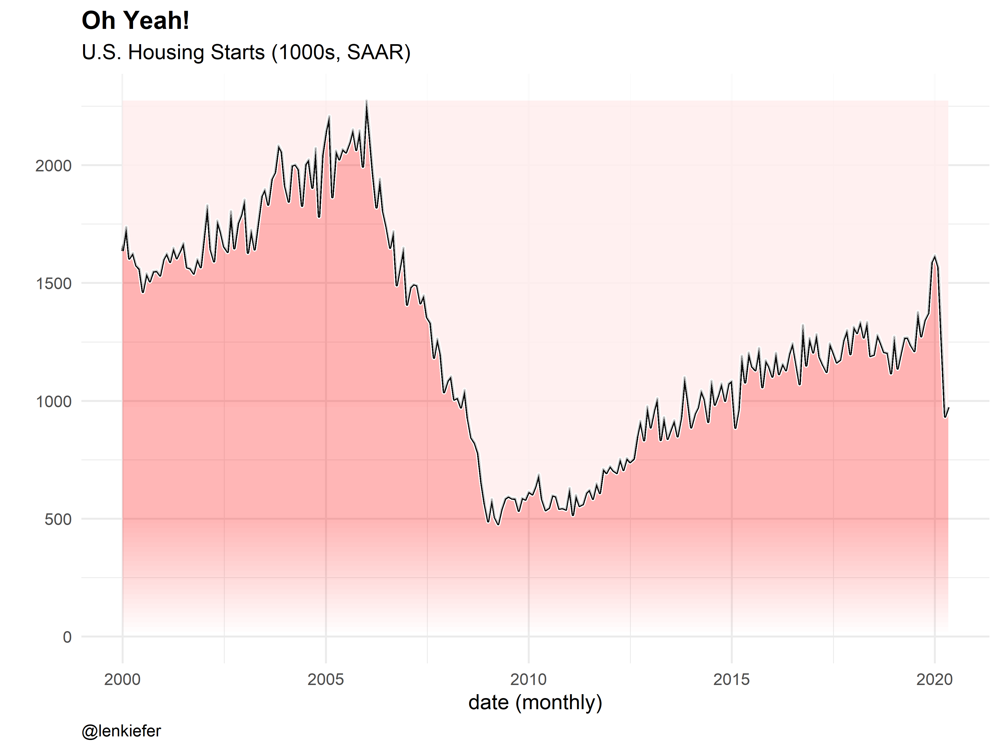
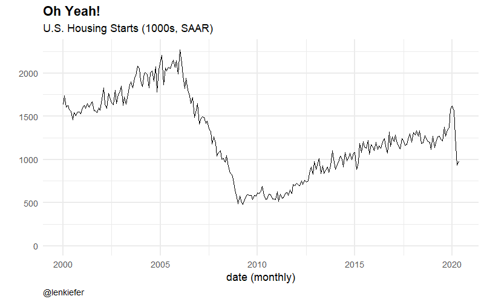

Over on Twitter Grant McDermott shares a neat ggplot2 trick:
A shortcut I like to use is calling multiple geoms in an lapply() call, since this automatically generates a list. Works well for investigating plotting variations, e.g.
— Grant McDermott (@grant_mcdermott) June 22, 2020
ggplot(diamonds, aes(carat)) +
lapply(c(50,200), function(b) geom_histogram(bins=b, alpha=0.3)) https://t.co/hf0vtvDkbk pic.twitter.com/jmmqlyJEKo
I applied this trick to create a gradient fill for a chart.

Looks kind of like Kool-Aid. Cherry was my favorite, but if you prefer grape, just swap in “purple” for “red” in the code below.
Here’s an animated version:

Grant’s neat trick used lapply. I wanted to create a function that would take multiple inputs, so I slightly modified it to use mapply and multiple arguments.
library(tidyverse)
library(gganimate)
df <- tidyquant::tq_get("HOUST",get="economic.data",from="2000-01-01")
N <- 20
xlist1 <- sort(c(max(df$price),tail(df$price,1),
pretty(c(0,min(df$price)),n=N,min.n=N)))
# static plot:
g1 <-
ggplot(data=df, aes(x=date,y=price))+geom_line()+
mapply(function(ylow,yhigh,col,a=0.1){geom_ribbon(aes(ymin=ylow,ymax=yhigh),alpha=a,fill=col)},
head(xlist1,-1),
tail(xlist1,-1),
"red",
seq(0,0.3,length=length(xlist1)-1))+
geom_line(size=2,color="white")+
geom_line(size=1.1)+
geom_ribbon(aes(ymin=price,ymax=Inf),fill="white",alpha=0.8)+
theme_minimal(base_size=18)+
theme(plot.caption=element_text(hjust=0),
plot.title=element_text(face="bold",size=rel(1.2)))+
labs(x="date (monthly)",y="",
subtitle="U.S. Housing Starts (1000s, SAAR)",
title="Oh Yeah!",
caption="@lenkiefer")
# animate it:
a1 <- g1+transition_layers(layer_length = 1)
animate(a1,end_pause=20, fps=20,width=800,height=500)